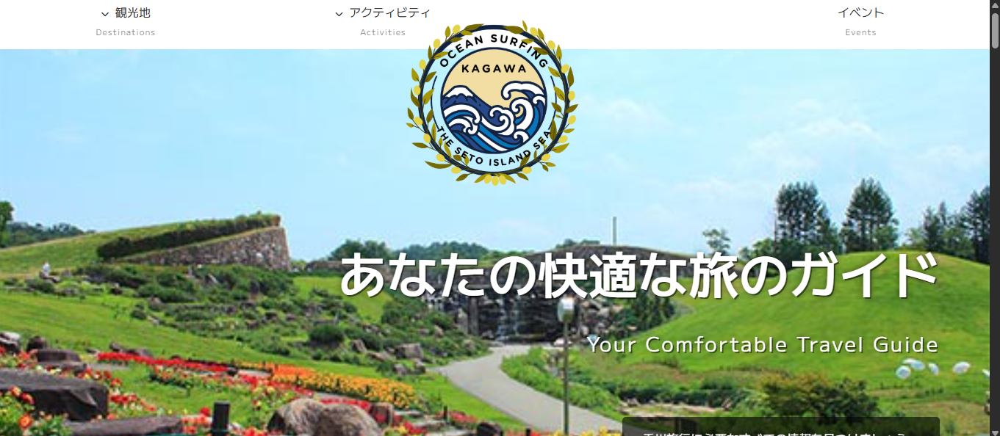

SCHOOL PROJECTWORK 01
香川県観光紹介サイト
香川県の観光地や魅力を紹介することを目的に制作した複数ページのWebサイトです。 写真を大きく見せ、観光地の雰囲気が伝わる構成を意識しました。
- 制作区分
- チーム制作（２名）
- 担当範囲
- 企画 / デザイン / コーディング / レスポンシブ対応
- 使用技術
- HTML / CSS / JavaScript
- 主な実装
- 複数ページ / スライド表示 / 動画背景 / 内部・外部リンク
工夫した点
- 画像を活用し、観光地の魅力が直感的に伝わるレイアウトにしました。
- スマートフォンでも情報を追いやすいよう、画面幅に応じて配置を変更しました。
- ナビゲーションとリンクの位置を統一し、ページ間を移動しやすくしました。